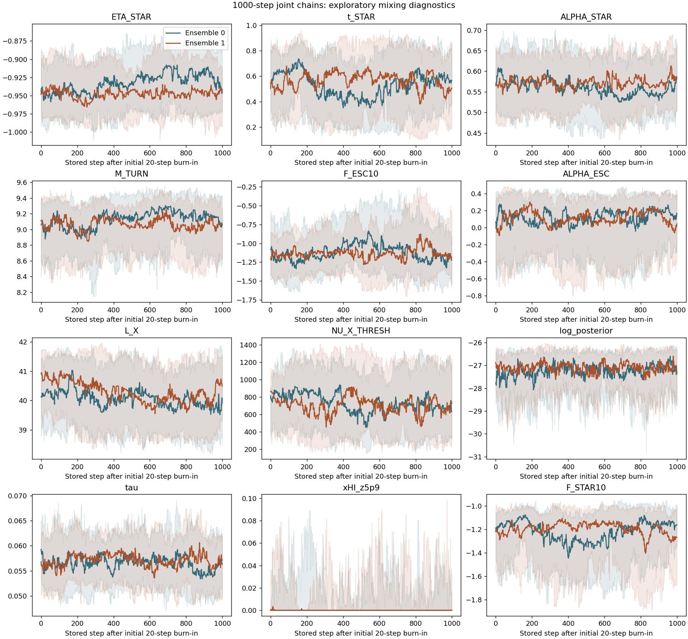

EXACT JOINT / REPAIRED NATIVE / 2026-10-10
New joint results
Completed repaired-native chains only. Old chains and the PL emulator reference remain separate.
MCMC compute pipeline · what the cache reuses ↗
Fixed ms: two completed ensembles
kp = 10 h Mpc⁻¹ · ms = 2.5 · 1000 × 32 × 2 · 64,000 correlated rows, not ESS.
LF: median and empirical 16–84% range from 256 selected rows. Tau and neutral hydrogen history: all 64,000 fixed-model rows. Inherited same-target prefixes counted once; no emulator outputs pooled.

Best sampled joint fit
Black stars and diagonal values mark one retained vector with the highest LF + tau + xHI likelihood. Numerical axes use the sampled coordinates. Quantiles remain exploratory.
| Parameter | Best | Median | 16% | 84% |
|---|---|---|---|---|
| ETA_STAR | -0.915736 | -0.940387 | -0.983558 | -0.889436 |
| t_STAR | 0.567306 | 0.553226 | 0.201965 | 0.836919 |
| ALPHA_STAR | 0.52734 | 0.566097 | 0.479574 | 0.653512 |
| M_TURN | 9.26729 | 9.10403 | 8.56016 | 9.41278 |
| F_ESC10 | -1.23949 | -1.13085 | -1.48114 | -0.651549 |
| ALPHA_ESC | 0.342459 | 0.118987 | -0.502032 | 0.405872 |
| L_X | 39.4652 | 40.1786 | 38.7322 | 41.505 |
| NU_X_THRESH | 531.649 | 733.771 | 283.726 | 1228.72 |
Derived log10(F_STAR10) = -1.16192 · tau = 0.0540548
Free ms: two completed ensembles
200 stored steps × 32 walkers × 2 ensembles; nine sampled parameters, 12,800 correlated rows. Both completed chains are pooled with equal weight per stored row. Convergence has not been established.

1000-step convergence assessment
Worst matched-walker rank/folded R̂: 2.24; shortest length/IAT: 7.76. No completely stuck walkers. Mixing and drift gates fail: exploratory samples, not converged constraints. Constant xHI sequences make some autocorrelation diagnostics unavailable; no stored rows were removed.

Download numerical data
Metadata / quantiles / source hashes →Fixed-model samples · CSV →
Free-ms samples · CSV →
Neutral hydrogen history · CSV →
LF / tau / history · JSON →
LF empirical bands · JSON →